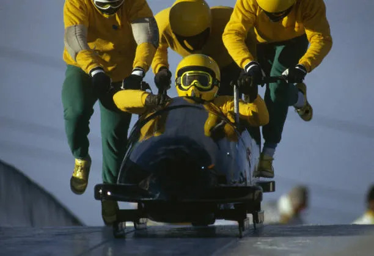
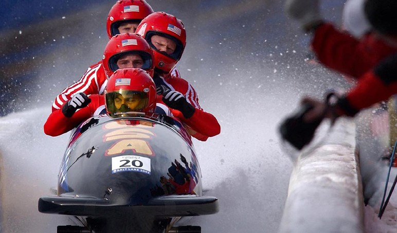

Bobsleigh
Un sport d’hiver spectaculaire entre vitesse, précision et travail d’équipe
Présentation du bobsleigh
Le bobsleigh est une discipline emblématique des Jeux olympiques d’hiver. Elle consiste à descendre une piste glacée dans un traîneau profilé appelé bob, en recherchant le meilleur temps possible. Ce sport combine vitesse, puissance, coordination et maîtrise technique.
Les équipes sont composées de deux ou quatre athlètes selon l’épreuve. Après une phase de poussée très intense, les sportifs montent rapidement dans le bob pour réaliser une descente spectaculaire sur une piste sinueuse. Le pilote dirige l’engin avec précision afin d’optimiser la trajectoire dans chaque virage.
Comment fonctionne ce sport ?
1. Le départ
Les athlètes poussent le bob sur plusieurs mètres pour lui donner un maximum de vitesse avant d’y prendre place. Cette phase est essentielle car elle influence directement le chrono final.
2. La descente
Une fois installée, l’équipe descend la piste glacée à très grande vitesse. Le pilote doit choisir la meilleure trajectoire possible pour perdre le moins de temps.
3. Le rôle de l’équipe
En plus de la poussée initiale, la coordination entre les membres de l’équipe est indispensable pour garantir stabilité, équilibre et performance.
4. Le classement
Les équipes réalisent plusieurs manches, et le classement final dépend du temps total cumulé. L’équipe la plus rapide remporte l’épreuve.
Les épreuves de bobsleigh
Lors des Jeux olympiques d’hiver, le bobsleigh comprend plusieurs formats :
- Bob à 2 masculin
- Bob à 4 masculin
- Bob à 2 féminin
- Monobob féminin
Chaque épreuve possède ses spécificités, mais toutes demandent une excellente explosivité au départ, un grand sang-froid et une parfaite maîtrise de la vitesse.


Pourquoi regarder le bobsleigh ?
Vitesse
Les bobs peuvent dépasser les 120 km/h sur certaines pistes.
Adrénaline
Chaque virage est impressionnant et peut faire basculer la course.
Esprit d’équipe
La synchronisation entre les athlètes joue un rôle majeur.
Précision
Le moindre écart de trajectoire peut coûter de précieuses secondes.
Informations utiles
Consultez le programme des épreuves de bobsleigh et réservez vos billets pour assister à cette discipline incontournable des Jeux olympiques d’hiver 2026.